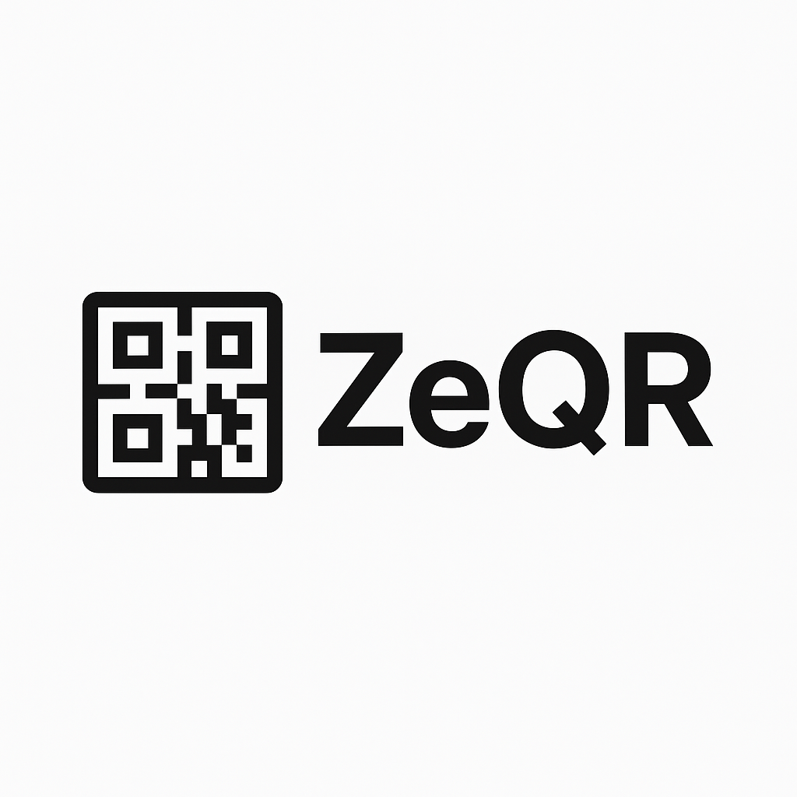

About us
ZeQR is a website that was created to help people
use latest technology allowing users to provide us with the link and
we convert it to a QR-code img. This is helpful when you want create a poster with
QR-code , sending a friend a link ,etc. So there is no need for you to type the link
,you will just send QR-code img and they will scan it and get your link.